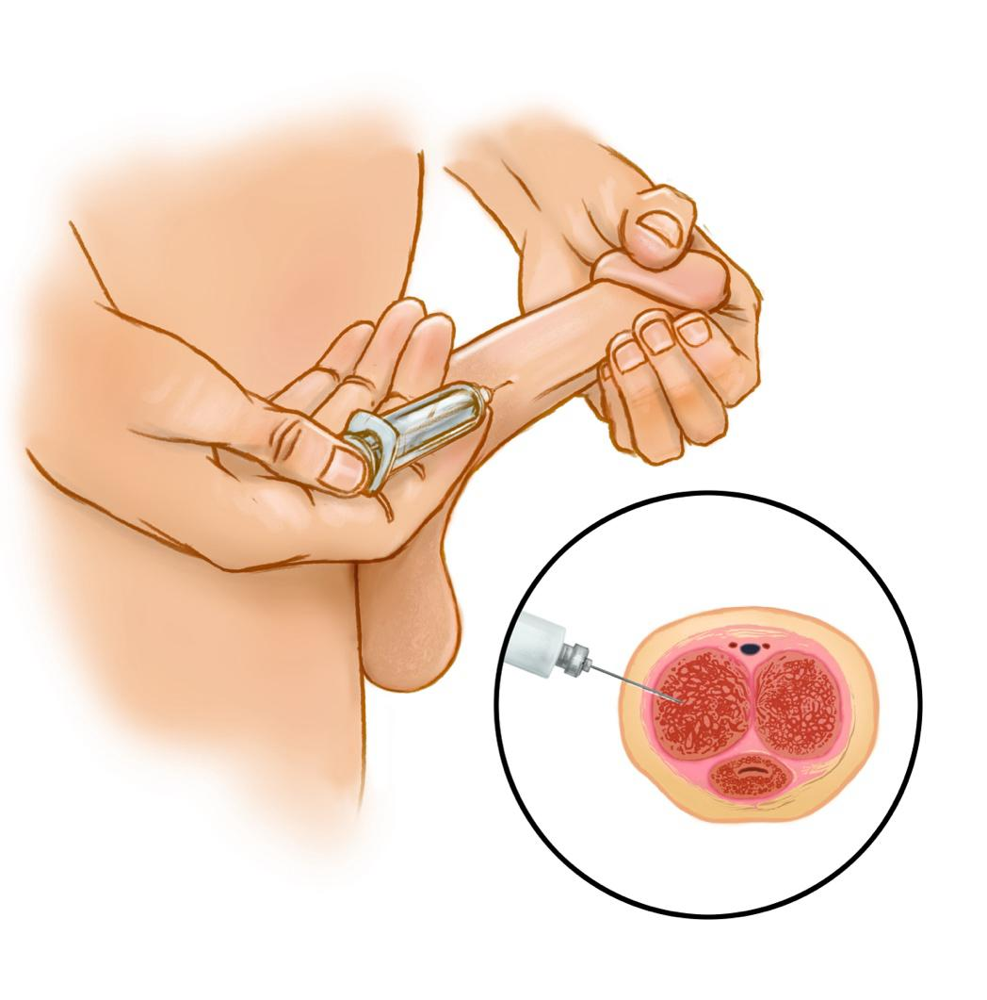

Erectile dysfunction, or ED, means trouble getting or keeping an erection. It can be caused by blood flow problems, nerve issues, or other health concerns.
Penile self-injection is a treatment for ED. A small needle is used to inject medicine into the side of the penis. This helps increase blood flow and causes an erection strong enough for sexual activity.
This treatment is used when oral ED pills do not work well or cannot be taken safely.
1. Wash your hands: Use soap and water.
2. Gather supplies: Get your medicine vial, syringe, alcohol swab, and sharps container.
3. Sit or stand comfortably: Use a mirror, if needed.
4. Check the medicine: Make sure it is clear and not expired.
5. Draw the medicine: Use the syringe to pull the right amount of medicine from the vial.
6. Hold the skin taut: Hold the head of the penis firmly to stretch the skin taut on the shaft.
7. Find the injection site: Use the left or right side, never the top, bottom, or head of the
penis. Avoid visible veins.
8. Clean the site: Use an alcohol swab, and let the site dry.
1. Hold the syringe like a pen or dart.
2. Aim at a 90-degree angle to the side of the penis.
3. Push the needle in quickly and gently.
4. Press the plunger to inject the medicine. Count to 5.
5. Pull the needle out and press gently on the site with clean gauze.
6. Do not rub the site. Always switch sides each time you inject.

You may get an erection in 5 to 20 minutes.
The erection should last under 1 hour.
Do not inject more than once every 24 to 48 hours.
Do not inject more than 3 times a week.
Do not use more medicine than your care team prescribed.
Do not reuse needles or syringes.
Always use a sharps container to throw away used needles.
Avoid injecting into veins or the same site each time.
Tell your care team if you take blood thinners or have sickle cell disease.
Do not share your medicine with others.
Call your care team if:
You have bleeding from the injection site that does not stop after gentle pressure.
You have bruising, swelling, or a lump at the injection site that gets bigger or is painful.
You have pain in your penis that does not go away or gets worse.
The penis starts to bend or curve during erections.
You have signs of infection at the injection site: redness, warmth, pus, or fever of 100.4°F or 38°C or higher.
You have trouble getting or keeping an erection with the injections.
You have any questions or concerns about your injection or how you are feeling.
Get help right away if:
You have an erection that lasts longer than 4 hours. This is called priapism and can cause permanent damage if not treated quickly.
You have severe pain in your penis, especially if the erection will not go away.
The penis becomes cold, blue, or numb.
You have heavy bleeding that will not stop.
You have sudden swelling or severe bruising of the penis.
You have signs of a severe allergic reaction, such as trouble breathing or swelling of your face, lips, tongue, or throat.
Thank you for trusting us with your care. We are here to support you and want you to feel your best. Contact us with any questions.
IF YOU HAVE A MEDICAL EMERGENCY, CALL 911 OR GO TO THE EMERGENCY ROOM.
The information presented is intended for general information and educational purposes. It is not intended to replace the advice of your health care provider. Contact your health care provider if you believe you have a health problem.
Last updated May 2025
© 2025 Mytonomy, Inc. All rights reserved.